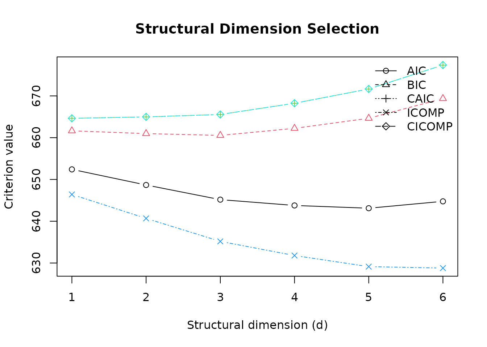

Purpose
Sufficient dimension reduction seeks a low-dimensional projection
\mathbf{B}^{\mathsf{T}}\mathbf{X} that retains the
information in the predictors \mathbf{X} about a response
Y. The working condition is
risdr combines classical inverse-regression estimators
with covariance regularisation, structural dimension criteria,
prediction, and resampling. The implemented SDR methods are SIR (Li 1991), SAVE (Cook
1998), DR (Li and Wang 2007), and
pHd (Li 1992).
A reproducible example
library(risdr)
sim <- simulate_risdr_data(
n = 160,
p = 20,
d = 2,
rho = 0.6,
sigma = 0.7,
model = "linear_quadratic",
seed = 2026
)The simulation object contains the predictor matrix, response, true central subspace basis, sufficient predictors, population covariance matrix, signal, noise, and generation settings.
str(sim[c("X", "y", "beta", "Sigma", "n", "p", "d")], max.level = 1)
#> List of 7
#> $ X : num [1:160, 1:20] 0.693 -0.258 0.472 -0.714 -0.621 ...
#> ..- attr(*, "dimnames")=List of 2
#> $ y : num [1:160] 0.6767 2.2458 0.0652 1.7558 0.0142 ...
#> $ beta : num [1:20, 1:2] -1 0 0 0 0 0 0 0 0 0 ...
#> ..- attr(*, "dimnames")=List of 2
#> $ Sigma: num [1:20, 1:20] 1 0.6 0.36 0.216 0.13 ...
#> $ n : int 160
#> $ p : int 20
#> $ d : int 2Fit an SDR model
fit <- fit_risdr(
X = sim$X,
y = sim$y,
sdr_method = "dr",
cov_method = "oas",
nslices = 6,
d_max = 6,
selector = "cicomp",
standardize = TRUE,
stabilize = TRUE
)
fit
#> Regularised and Information-Theoretic SDR fit
#> --------------------------------------------------
#> SDR method : DR
#> Covariance : OAS
#> Stabilised : TRUE
#> Stabilisation : eigenfloor
#> Selected d : 1
#> Selector : CICOMP
#> Number of slices : 6
#> Observations : 160
#> Predictors : 20
summary(fit)
#> Summary of risdr fit
#> --------------------------------------------------
#> Method : DR
#> Covariance : OAS
#> Selected dimension : 1
#> Selector : CICOMP
#>
#> Leading eigenvalues:
#> [1] 3.546972 2.413215 2.342954 1.760832 1.678750 1.613520 1.544909 1.470014
#> [9] 1.379194 1.318532
#>
#> Dimension selection table:
#> d AIC BIC CAIC ICOMP CICOMP
#> 1 1 652.4135 661.6390 664.6390 646.4136 664.6392
#> 2 2 648.6741 660.9748 664.9748 640.6798 664.9805
#> 3 3 645.1711 660.5470 665.5470 635.1832 665.5591
#> 4 4 643.7799 662.2309 668.2309 631.7938 668.2448
#> 5 5 643.1144 664.6406 671.6406 629.1346 671.6608
#> 6 6 644.7628 669.3642 677.3642 628.7866 677.3880
#>
#> Covariance diagnostics:
#> $min_eigenvalue
#> [1] 0.2571752
#>
#> $max_eigenvalue
#> [1] 3.881756
#>
#> $condition_number
#> [1] 15.09382
#>
#> $effective_rank
#> [1] 20The fitted object stores the training transformations, covariance estimate, kernel, eigenvalues, directions, scores, dimension-selection table, and downstream linear model.
Inspect the structural dimension
fit$d_table
#> d AIC BIC CAIC ICOMP CICOMP
#> 1 1 652.4135 661.6390 664.6390 646.4136 664.6392
#> 2 2 648.6741 660.9748 664.9748 640.6798 664.9805
#> 3 3 645.1711 660.5470 665.5470 635.1832 665.5591
#> 4 4 643.7799 662.2309 668.2309 631.7938 668.2448
#> 5 5 643.1144 664.6406 671.6406 629.1346 671.6608
#> 6 6 644.7628 669.3642 677.3642 628.7866 677.3880
criterion_weights(fit$d_table, criterion = "CICOMP")
#> d criterion value delta weight
#> 1 1 CICOMP 664.6392 0.0000000 0.3744185043
#> 2 2 CICOMP 664.9805 0.3413617 0.3156687272
#> 3 3 CICOMP 665.5591 0.9199146 0.2363743701
#> 4 4 CICOMP 668.2448 3.6056768 0.0617155391
#> 5 5 CICOMP 671.6608 7.0216670 0.0111846317
#> 6 6 CICOMP 677.3880 12.7488687 0.0006382277Information criteria answer a model-selection question, while predictive cross-validation estimates out-of-fold error. Both should be considered when the selected dimension is consequential.
cv <- select_dimension_cv(
X = sim$X,
y = sim$y,
sdr_method = "dr",
cov_method = "oas",
d_max = 5,
v = 5,
nslices = 6,
metric = "RMSE",
seed = 2026
)
cv$selected_d
#> [1] 4
cv$cv_table
#> d RMSE MAE MAPE R2 Adjusted_R2 Correlation RMSE_SD
#> 1 1 1.925508 1.320080 401.7670 0.02811421 -0.004281982 0.3532172 0.3417961
#> 2 2 1.914872 1.303977 403.1347 0.05440990 -0.010803214 0.3706750 0.3731576
#> 3 3 1.913670 1.261976 383.4571 0.04526626 -0.057026641 0.3479463 0.3251972
#> 4 4 1.882636 1.241811 368.9813 0.07647568 -0.060342736 0.3744047 0.3206029
#> 5 5 1.885588 1.229950 356.3241 0.07431750 -0.103698361 0.3746814 0.3111336
#> MAE_SD MAPE_SD R2_SD Adjusted_R2_SD Correlation_SD
#> 1 0.1579465 218.8750 0.2886675 0.2982898 0.2784702
#> 2 0.1921951 217.5938 0.2265393 0.2421626 0.2340298
#> 3 0.1659905 213.1066 0.2454981 0.2718015 0.2139119
#> 4 0.1754700 229.4375 0.2390968 0.2745185 0.2026659
#> 5 0.1675317 216.1027 0.2329199 0.2777122 0.1938162Prediction
Prediction applies the training centre, scale, SDR centre, and estimated directions to new observations before invoking the downstream model.
predicted <- predict(fit, sim$X[1:12, , drop = FALSE])
evaluate_prediction(
y_true = sim$y[1:12],
y_pred = predicted,
d = fit$d
)
#> RMSE MAE MAPE R2 Adjusted_R2 Correlation
#> 1 1.579152 1.165364 1161.818 0.4183239 0.3601562 0.6936867Named columns may be supplied in a different order. They are checked and reordered to the training layout. A single new observation is also valid.
Component-specific controls
Arguments for covariance estimation, covariance stabilisation, and SDR kernels are supplied separately. This prevents a control intended for one component from being passed to another component.
Diagnostics
plot_scree(fit, n_eigen = 10)
plot_sufficient(fit, direction = 1)
plot_dimension_selection(fit)
Loadings and sufficient summary plots are descriptive. Signs of eigenvectors are not identified, so sign reversals across numerically equivalent fits do not change the estimated subspace.
Current scope
The verified modelling interface in version 0.3.0 is for continuous
responses. The standalone MEC covariance helper accepts additional
working response forms, but binary, multiclass, and censored survival
modelling are not yet claimed as complete risdr
workflows.